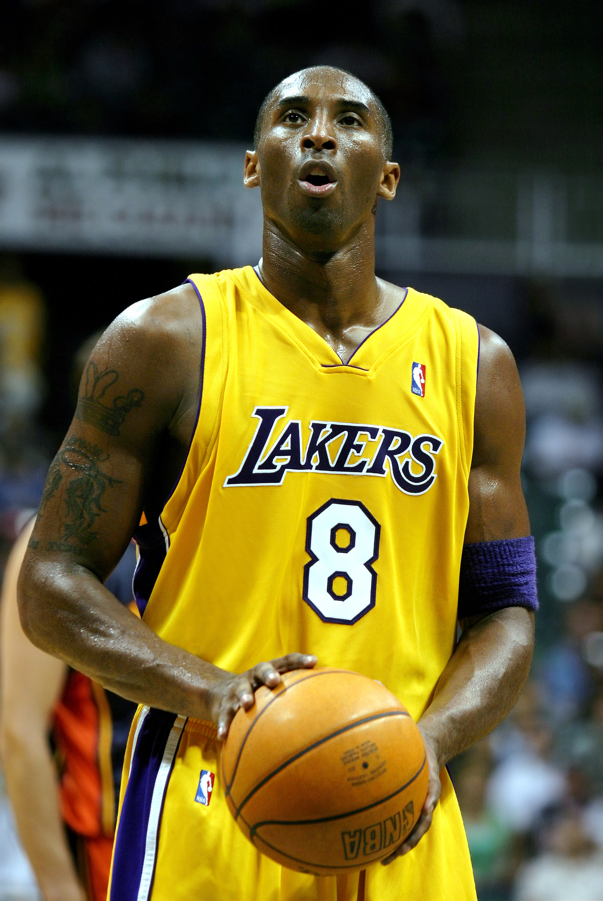

kobe bryant
Kobe Bean Bryant (Filadelfia, Pensilvania, 23 de agosto de 1978-Calabasas, California, 26 de enero de 2020)5 fue un baloncestista estadounidense que jugaba en la posición de escolta. Disputó veinte temporadas en la NBA, todas ellas en Los Angeles Lakers.
Stephen Currry

En 12 años, Stephen Curry ha sumado una buena cantidad de palmares, pero entre los que más destacan son: Mas triples anotados en una temporada regular, en la temporada 2015-2016, 5 veces campeón de la conferencia Oeste, 3 veces campeón de la NBA, 2 medallas de oro en el mundial de basquetbol, en los años 2010 y 2014 y tiene el increíble récord de haber anotado mas tripletes en la historia de la NBA.
Shaquille O'Neal

Shaquille Rashaun O’Neal (Newark, Nueva Jersey, 6 de marzo de 1972) es un exjugador de baloncesto estadounidense, que disputó 19 temporadas en la NBA. Con 2,16 metros de altura, jugaba en la posición de pívot.2 Es considerado como uno de los jugadores más dominantes de la historia de la NBA,34 donde ganó cuatro campeonatos, tres con Los Angeles Lakers y uno con Miami Heat, además de finalizar subcampeón con Orlando Magic en 1995 y con Los Angeles Lakers en 2004.